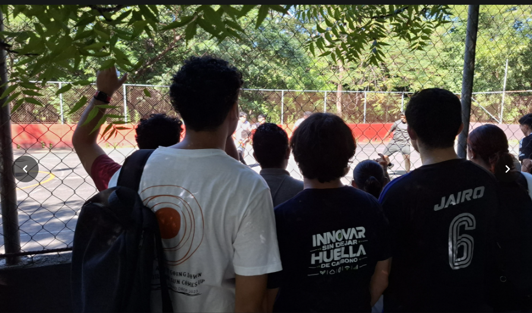

Torneo de fútbol sala20/11/2026CGcq22003 y gb23003

Lugar: Cancha de futsal, 8:00 a. m.
Desarrollo: Torneo donde 7 equipos disputaron partidos para ver el campeón
Equipos: Junta directiva, Manchester Rojo, Legion 7, Token FC, Jeffrey y sus amigos, Industriales, Dockercompose.yml
Participación (jugador o espectador): Espectador
Ganador del torneo : Jeffrey y sus amigos